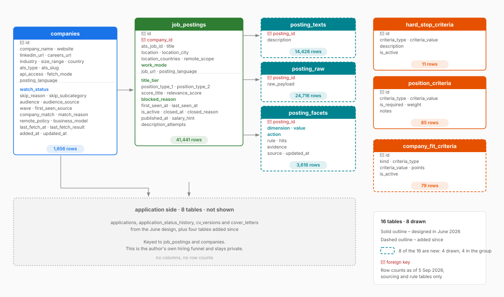

- 41,441 postings collected in 61 days, 20,634 of them already closed – half of everything the database has ever seen died inside two months. That is the rate at which a hand-maintained list goes stale, invisibly.
- “It’s never cost you anything to store it” did not survive. Texts and raw payloads moved out of
job_postingsinto two tables, the file is 214 MB, and descriptions are no longer fetched until a posting has passed the title gate. - A count of matching criteria was replaced by a deterministic dictionary of 88 title rules. The score failed because the threshold was set in June, before there was any distribution to look at.
- 1,802 open rows turned out not to be jobs but the career page’s own copy. Structures can be designed in advance; vocabularies cannot.
- The handoff line between the machine and my own hands moved four times, always in the same direction. The rule underneath it: you can only automate a decision that already has a written rule.
In June I published the schema behind the reverse ATS I use to run my job search: eight tables in two groups, operational and config, one SQLite file, 118 companies in the table and 54 of them watched. One sentence in that article I was sure of:
It’s never cost you anything to store it, and it’s frequently cost you something not to.
Sixty-one days later: sixteen tables, 1,656 companies, 41,441 postings collected, 20,634 of them already closed – and that sentence is wrong.
This is the repair log. Which decisions held without a migration, which ones I tore out, and how the line between what the machine decides and what I decide moved four times while I was looking at the schema.
All numbers are as of 5 September 2026, sixty-one days after the first fetch. One snapshot, one day: the database has moved on and the numbers have not been re-pulled.
June, and sixty-one days later


| Table drawn in the diagram | Rows |
|---|---|
companies | 1,656 |
job_postings | 41,441 |
posting_texts | 14,428 |
posting_raw | 24,716 |
posting_facets | 3,616 |
hard_stop_criteria | 11 |
position_criteria | 85 |
company_fit_criteria | 79 |
Table 1. Row counts as of 5 September 2026, for the eight tables drawn above. The three criteria tables hold the number of rules, not their contents.
Three decisions that held
Fourteen times more companies – 1,656 in the table today, against 1,594 on 26 August, of which 590 had a live board – and none of these needed a schema change.
last_seen_at instead of a webhook. Every run stamps the rows it still finds. A posting that disappears from a career page fires nothing: the timestamp stops moving, and the absence of an update is the signal. No ATS has to tell me anything.
This is the most valuable line in the schema, and not for the reason I wrote it. Of the 41,441 postings collected since 6 July, 20,634 are already closed – half of everything the database has ever seen died inside sixty-one days. The stock hides it: 20,807 open positions today, against 20,487 on 26 August, the cut behind the article I published the next day – 18,436 after stripping page furniture. New postings arrive at almost exactly the rate old ones disappear. A hand-maintained list does not go stale slowly. It goes stale at roughly 50% per two months, invisibly, while every row in it still looks fine.
The upsert. ON CONFLICT(company_id, ats_job_id) DO UPDATE SET last_seen_at = CURRENT_TIMESTAMP. Deduplication that costs nothing per run and has never once needed attention.
Rules as data, not as code. hard_stop_criteria and position_criteria are tables rather than a script, so a new disqualifier is an INSERT and takes effect on the next run. In June this looked like mild over-engineering for a personal tool. It is why everything below is a rewrite of rules and not a rewrite of the database.
What storing everything cost
The raw JSON of every posting went into raw_payload, a column on job_postings. The description went into description, next to it. Capture everything, parse later.
At 41,441 rows the problem is “next to it”. Every count, every dashboard refresh, every scoring pass over titles was dragging tens of thousands of multi-kilobyte blobs through memory to read a title and a timestamp. The file is 214 MB, and almost none of what makes it 214 MB is what I query.
On 29 August I split it: posting_texts and posting_raw, both keyed by posting_id, both joined only when something actually needs the text. job_postings went back to being a table of facts about postings rather than a container for their contents.
The second half of the fix was to stop downloading descriptions at all until a posting has passed the title gate. 6,956 of the 20,807 open postings have their text stored – a third (posting_texts holds 14,428 rows in all, closed postings included). The other two thirds were filtered out on their title and their location, and their descriptions would have been bytes nobody would ever read.
The sentence should have been: storing it costs you nothing if you also decide what not to fetch. Storage was never the expensive part. Indiscriminate retrieval was.
A score that scored everything
The June rule: check each posting against every row in position_criteria, count the matches, that count is the relevance score, anything scoring 1 or more enters the database. I defended the crudeness in print – “No weights, no thresholds, no model – just a row count.”
At 118 companies that is a filter. At 14,454 postings past the hard stops it is a rubber stamp. Location was one of the criteria, so a Sales Development Representative in Austin matches on location alone and passes. A ranking whose entry price is a single match does not tell you where to start reading.
What replaced it is not smarter, it is more specific: a deterministic dictionary of 88 title rules that assigns every posting a broad type, a narrow discipline and a title_tier for how close the title sits to what I can do. I published that rule table with the dataset in August. Still no machine learning, and nothing that guesses: the same title always gets the same verdict, and I can read the line that produced it. A rule that says this exact title, this exact tier instead of a rule that says something matched.
The score failed not because counting is naive but because I set the threshold before I had ever seen the distribution. In June there was no distribution. There were 118 companies and an intuition.
1,574 postings that were not jobs
1,574 rows in the database are not job postings. They are the career page’s own copy – “View all openings”, “Life at company”, “Benefits” – and a further 228 are page furniture of other kinds. The scraper was reading text that sits where a job title sits and filing it as a vacancy, competently, thousands of times, for weeks.
No schema fixes this. There is a junk_title block reason, written after the fact, applied to 1,802 rows I had to look at first. Those are open rows carrying one of those two reasons; counting every flavour of junk – nav headers, region headers, names scraped off team pages – it is 1,872 open rows, and 5,467 across all 41,441, because page furniture disappears from a page too. The August article, counting every flavour among that day’s 20,487 open rows, stripped 2,051.
The vocabulary I could not have guessed
The same failure, from the other end of the pipeline. In June I wrote out the stages an application moves through, as a list: manually_reviewed → applied → screening → test_task → team_interview → hm_interview → higherups_interview → offer, with statuses pending, invited, passed, failed, ghosted, accepted, declined. By late August one of those eight stages, higherups_interview, had never once happened, and the process had produced three names I had not thought of: tech_interview, test_review, final_interview.
Structures can be designed in advance. Vocabularies cannot. A table is a guess about shape, and shape is stable. A category list is a guess about the world, made before the world had been sampled.
Where the gate stands
| Stage | Postings | Of what is open | Decided by |
|---|---|---|---|
| Collected since 6 July | 41,441 | – | machine |
| – of which already closed | 20,634 | – | machine (last_seen_at) |
| Open today | 20,807 | 100% | |
| Past hard stops: country, language, junk, seniority | 14,454 | 69.5% | machine, rules as data |
| Past the title dictionary – the shortlist | 1,666 | 8.0% | machine, 88 rules |
| Still standing after facet review | 964 | 4.6% | rules and hand |
Table 2. As of 5 September 2026. The share column is of what is open today, not of everything collected, which is why the first two rows carry a dash. The last two rows are where rules and hand meet.
The largest block is geographic: 1,614 open postings say “remote” and mean “remote if you already live in the United States”. Another 688 are in India, 244 in Brazil and 146 in Mexico – the same wall in a different country: the role is open, and it is open to people already living there. 222 contain the word “intern”. 91 are in German.
Nothing got faster. 1,666 rows reach my eyes instead of 41,441 – 4% of what has been collected – and the 39,775 that do not are removed by rules I can read, edit, and be wrong about in public. Of the 1,666, another 702 carry a skip on a named dimension – wrong audience, wrong discipline, wrong language, too old – which leaves 964 standing.
The handoff line moved four times
The design was two-part: the machine sources, the human decides. It did not hold, and it failed in one direction only. Each time, the same move: a decision I had been making by hand got written down, and then it stopped being mine.
June. Collection. Everything after it was mine.
Early August. The first gate stops being a score and becomes a rulebook. hard_stop_criteria runs before anything else – country, language, junk, seniority – and by mid-month the reason a posting was dropped is written into the row itself. That part matters more than the filtering: a gate whose verdicts I can read is a gate I can argue with.
Late August. The second gate: 88 title rules, one type, one discipline and one tier per posting. Plus facets – tagged verdicts on individual postings for audience, discipline, language, scope, work authorisation, freshness. There are 3,616 of them now, 2,612 written by rules, 1,004 by hand, and every rule in that 2,612 started as something I did manually often enough to notice I was doing it the same way each time.
September. Reading a description end to end and judging whether the role is doable was the last thing still mine. I wrote the criteria down – gates, soft flags, what counts as a must-have, what a seniority mismatch means – and a language model (Claude) now reads the text against that rulebook and returns fit, weak fit, not fit, or insufficient data. This is the first stage in the pipeline that is not deterministic, so every verdict has to quote the line of the posting it relied on: I can audit it in seconds and overturn it. The order matters more than the model does. The rulebook was written first, by hand, on the postings the earlier gates had already narrowed down; the model came second, and it decides nothing about what counts – it reads a description against criteria that existed before it did. The first pass ran on 4 September; two verdicts I overturned the same evening.
Two things are still mine and will stay mine: submitting the application, and researching a company before I talk to it. Nobody automates a workflow from 0% to 100%. You automate the part you have already explained to yourself.
The rule
You can only automate a decision that already has a written rule. Not a felt one. A written one.
That is why the hard stops paid off and relevance_score did not. The hard stops I could state in a sentence: no German-only postings, no internships, no roles that require US residency. The score was an intuition in the costume of a rule – it produced a number, the number looked principled, and it encoded nothing I could argue with. It is also why Fit-or-Not could be handed off in September and not in June: in June I could not have written down what makes a role doable, because I had not read enough of them.
The corollary: every stage here was manual first, and had to be. The manual pass was not a phase before the automation. It was the specification.
Not published
Eight tables are missing from the September diagram – everything on the application side, down to the two that hold the CVs and cover letters I send, drawn as one grey box with no columns and no counts.
application_status_history is the one I mind. It has fired on every stage change since June: response rates, time to first reply, how many applications end in silence. It is the most interesting data in the file, and it is my own hiring funnel while I am still standing in it. It gets published when I am not.
The sixth piece in a series on building a reverse ATS. Earlier: the framework · pitfalls · reading career pages without a browser · the schema · what the postings say about the market
If you have built something similar, or torn out a design decision you had already published, I would like to hear about it – on LinkedIn.